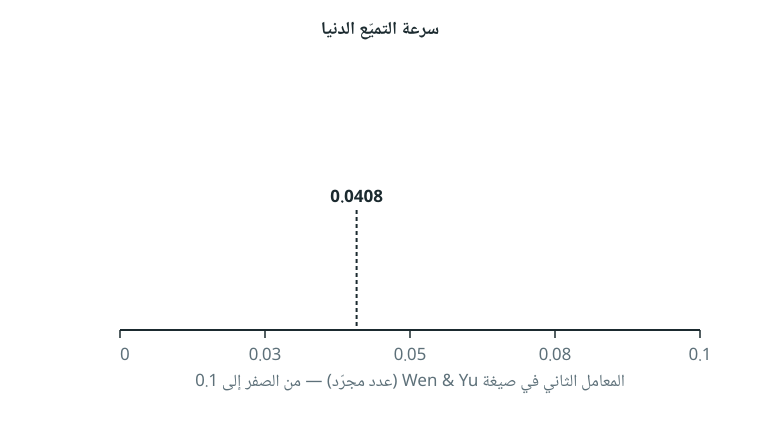

سرعة التميّع الدنيا
Minimum Fluidization Velocity
أقل سرعة ظاهرية للغاز تمرّ بها طبقة حبيبات فتبدأ الحبيبات بالتحرك وتصبح الطبقة متميّعة، وتُحدَّد من موازنة سقوط الضغط عبر الطبقة بوزنها الطافي لكل وحدة مساحة.
سرعة التميّع الدنيا هي أقل سرعة ظاهرية يمرّ بها السائل صعوداً عبر طبقة من الحبيبات فترتفع الطبقة عن قاعدتها وتصبح حبيباتها في حركة معلّقة تشبه السائل المغلي. وتُشتق من شرط فيزيائي واحد: أن يساوي سقوط الضغط عبر الطبقة وزن الحبيبات الطافي لكل وحدة مساحة، أي (1 − ε)(ρ_p − ρ_f)gL. وقبل هذه السرعة تكون الطبقة ثابتة ويزداد سقوط الضغط خطياً مع السرعة وفق معادلة إرغون؛ وعند بلوغها يثبت سقوط الضغط عند قيمة الوزن الطافي مهما زادت السرعة، لأن الطبقة تتمدد وتزداد نسبة فراغها. وتُستعمل هذه السرعة في تصميم المفاعلات ذات الطبقة المتميّعة والمجففات والمبادلات الحرارية ذات الحبيبات، إذ تحدد الحد الأدنى للتشغيل الذي دونه تتحول الطبقة إلى حشوة ساكنة. والخطأ الشائع أن تُحسب من معادلة إرغون بافتراض نسبة فراغ ثابتة عند التميّع، بينما نسبة الفراغ عند التميّع تختلف عن نسبة الفراغ في الحشوة الساكنة وتُقاس تجريبياً لكل مادة.
كيف تعمل الظاهرة؟
تعمل سرعة التميّع الدنيا لأن قوتين تتقابلان داخل الطبقة: قوة سحب السائل الصاعد على الحبيبات، ووزن الحبيبات الطافي بعد خصم دفع السائل. فحين تكون السرعة صغيرة، يمرّ السائل في الفراغات دون أن يزحزح الحبيبات، ويزداد سقوط الضغط خطياً مع السرعة لأن الاحتكاك اللزج هو الحاكم. وعند قيمة حرجة يصبح سقوط الضغط مساوياً للوزن الطافي لكل وحدة مساحة، فتُرفع الطبقة ويزداد حجمها وتزداد نسبة فراغها، فينخفض سقوط الضغط لو بقيت السرعة كما هي، فيستقر النظام على سقوط ضغط ثابت. ولهذا فإن منحنى سقوط الضغط مقابل السرعة ينكسر عند نقطة التميّع ويصبح أفقياً بعدها، وهذه الانكسارة هي ما يُقاس عملياً لتحديد السرعة.
العلاقة بالأرقام
الشرط الحاكم هو −ΔP/L = (1 − ε_mf)(ρ_p − ρ_f)g، ووحدته باسكال لكل متر. وبإدخال معادلة إرغون في الطرف الأيسر ينتج حل صريح لرقم رينولدز عند التميّع: Re_mf = √(33.7² + 0.0408·Ar) − 33.7، حيث Ar = d_p³ρ_f(ρ_p − ρ_f)g/μ². ولرمل قطره 500 µm وكثافته 2650 kg/m³ في الهواء: Ar ≈ 12030 وRe_mf ≈ 6.63، ومنه U_mf ≈ 0.199 m/s، وسقوط ضغط لكل متر نحو 14292 Pa/m. ويُلاحظ من الصيغة أن U_mf يتناسب مع مربع القطر للحبيبات الناعمة (رقم أرخميدس صغير) ويقترب من التناسب مع جذر القطر للحبيبات الخشنة، وهو ما يفسر حساسية الطبقات الناعمة للتغيرات الصغيرة في حجم الحبيبة.
مفاهيم متقاربة
تُفصل سرعة التميّع الدنيا عن السرعة الظاهرية لأن الأخيرة تعريف لمعدل التدفق على مساحة المقطع الكلية وتصلح لأي سرعة، بينما الأولى قيمة حدية واحدة من هذا التعريف. وتُفصل عن السرعة البينية التي تساوي السرعة الظاهرية مقسومة على نسبة الفراغ وتصف سرعة السائل بين الحبيبات لا شرط حركتها. وتُفصل عن السرعة الحدّية للجسيم المفرد: تلك تُحسب من موازنة سحب جسيم واحد في سائل ساكن لا نهائي، وهذه من موازنة طبقة كاملة يتشارك فيها السائل بين الحبيبات ويسقط ضغطها عبر الطول. وتُفصل كذلك عن سرعة النقل الهوائي التي تُخرِج الحبيبات من الطبقة إلى الأعلى، وهي أعلى بكثير من سرعة التميّع.
حدود التطبيق
تفترض الصيغة الشائعة حبيبات كروية متجانسة الحجم وطبقة موحّدة التوزيع، وتفقد دقتها مع الحبيبات الصفيحية أو الإبرية التي يقل فيها عامل الكرية عن الواحد، ومع التوزيعات الواسعة التي تهاجر فيها الحبيبات الناعمة إلى الأعلى قبل أن تتحرك الخشنة. وتعتمد النتيجة على نسبة الفراغ عند التميّع ε_mf التي تُقاس تجريبياً وتختلف بين مواد تبدو متشابهة، فاستخدام قيمة نمطية 0.4 قد يخطئ بنسبة معتبرة. كما أن الطبقات ذات القطر الصغير جداً للعمود تظهر فيها تأثيرات جدارية ترفع السرعة المطلوبة، والغازات عالية الحرارة والضغط تغيّر لزوجتها وكثافتها فتغيّر الرقم المحسوب.

| الكمية | القيمة | المصدر |
|---|---|---|
| المعامل الأول في صيغة Wen & Yu لرقم رينولدز عند التميّع | 33.7 — | [3] |
| المعامل الثاني في صيغة Wen & Yu | 0.0408 — | [3] |
| سرعة التميّع الدنيا لرمل قطره 500 µm بالهواء | 0.199 m/s | [3] |
| سقوط الضغط لكل متر عند التميّع لطبقة الرمل نفسها | 14291.6 Pa/m | [3] |
المصادر
- 1 Fluid Flow Through Packed Columns — S. Ergun — Chemical Engineering Progress (AIChE) (1952). scispace.com/papers/fluid-flow-through-packed-columns-32ay002rb0 · اطُّلع عليه 2026-11-28
- 2 Unit Operations of Chemical Engineering, 5th ed. — McCabe, Smith, Harriott — McGraw-Hill (1993). openlibrary.org/books/OL6199429M/Unit_operations_of_chemical_engineering · اطُّلع عليه 2026-11-28
- 3 Minimum Fluidization Velocity Calculator — Wen & Yu — Scientific Converters (2026). scientificconverters.com/calculators/minimum-fluidization-velocity-calculator/ · اطُّلع عليه 2026-11-28
استشهد بهذا المصطلح
الصيغتان مبنيتان من بيانات الصفحة نفسها: العنوان والتاريخ ورابط النسخة المنشورة.
سرعة التميّع الدنيا — Minimum Fluidization Velocity. (2026). ديوان المعرفة — انفراد. https://infiradev.com/diwan/terms/term-minimum-fluidization-velocity.html
@misc{term-minimum-fluidization-velocity2026,
title = {سرعة التميّع الدنيا},
titleaddon = {Minimum Fluidization Velocity},
howpublished = {{ديوان المعرفة — انفراد} — مرجع علمي عربي},
year = {2026},
url = {https://infiradev.com/diwan/terms/term-minimum-fluidization-velocity.html},
urldate = {2026-11-28},
note = {مراجعة علمية: Abdullah Al-Huwaidi}
}
راجعه: Abdullah Al-Huwaidi · 2026-11-28 · آخر تحديث 2026-11-28